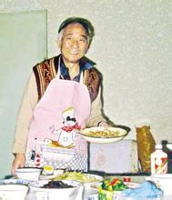

汪曾祺书画

汪曾祺书画


高邮
- 特产：咸鸭蛋、高邮湖蟹
- 旅游：镇国寺、文游台
- 名人：秦少游、王念孙、王引之、王夫之、吴三桂等

高邮双黄咸鸭蛋
汪曾祺相关作品
- 《我的家乡》
- 《端午的鸭蛋》

镇国寺
沈从文
沈从文（1902－1988），中国著名作家，原名沈岳焕，笔名休芸芸、甲辰、上官碧、璇若等，乳名茂林，字崇文。
湖南凤凰县人，祖母刘氏是苗族，其母是土家族，祖父是汉族。因此，沈从文的民族身份可以是此三个民族的任何一个，但沈从文本人却更热爱苗族，他的文学作品中有许多对于苗族风情的描述。
《边城》《长河》《雪晴》 《湘行散记》《从文自传》《中国古代服饰研究》
沈从文（1902－1988）
沈从文

沈从文和张兆和
沈从文和汪曾祺
《受戒》
小英子忽然把桨放下，走到船尾，趴在明子的耳朵旁边，小声地说：
“我给你当老婆，你要不要？”
明子眼睛鼓得大大的。
“你说话呀！”
明子说：“嗯。”
“什么叫’嗯’呀！要不要，要不要？”
明子大声地说：“要！”
“你喊什么！”
明子小小声说：“要——！”
“快点划！”
英子跳到中舱，两只桨飞快地划起来，划进了芦花荡。芦花才吐新穗。紫灰色的芦穗，发着银光，软软的，滑溜溜的，像一串丝线。有的地方结了蒲棒，通红的，像一枝一枝小蜡烛。青浮萍，紫浮萍。长脚蚊子，水蜘蛛。野菱角开着四瓣的小白花。惊起一只青桩（一种水鸟），擦着芦穗，扑鲁鲁鲁飞远了。
……
一九八〇年八月十二日，写四十三年前的一个梦
《边城》
- 《我的老师沈从文》
- 《沈从文先生在西南联大》
- 《星斗其文，赤子其人》
《受戒》
水的感觉
非悲剧
《边城》
直接写水
悲剧
乡土民俗
桃源情结
人性之美的隐喻
受中国传统画尤其是宋元文人画的影响